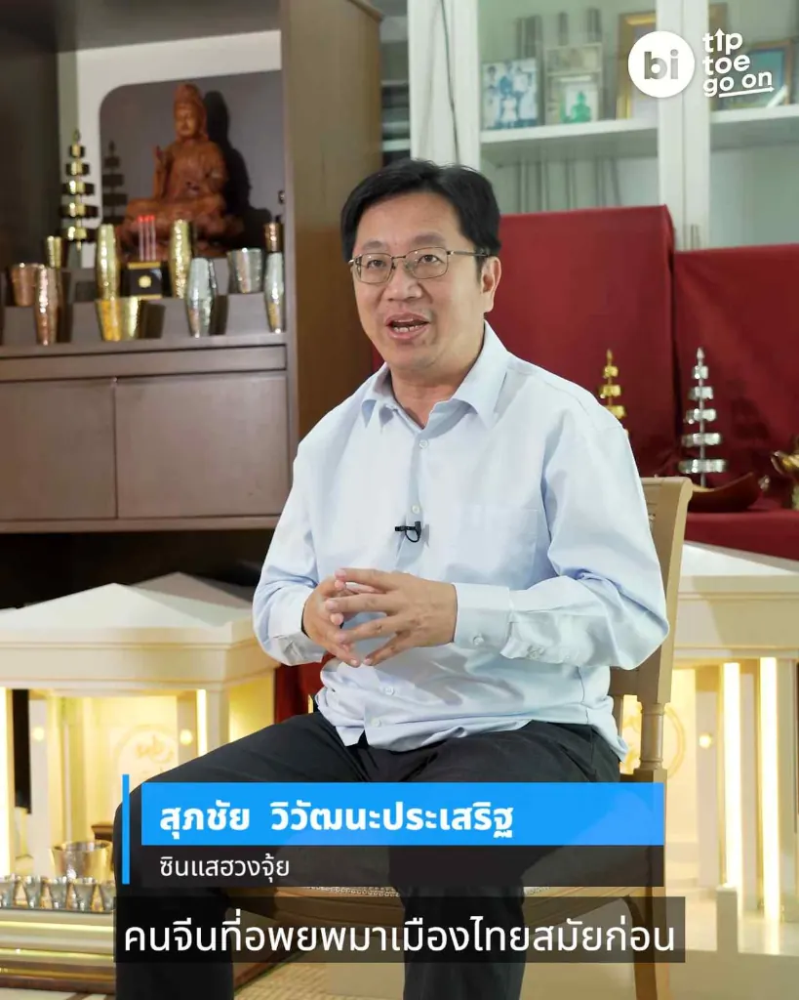
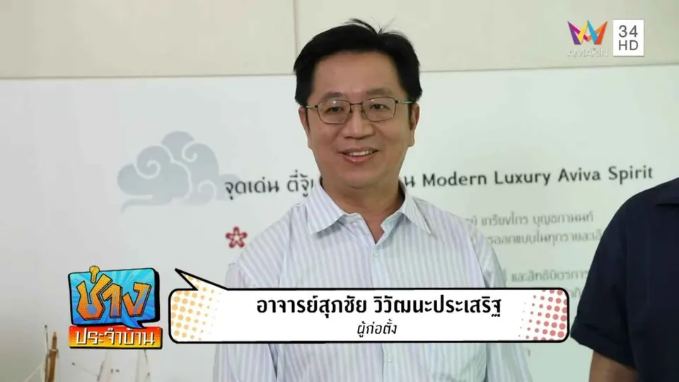
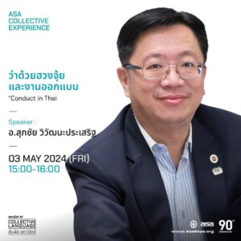

Principle 01
ไม่ทุบ ไม่รื้อ ถ้าไม่จำเป็น
อาจารย์เลือกแนวทางที่แก้ได้ง่ายและได้ผลก่อนเสมอ เช่น การปรับตำแหน่ง ทิศทางการวาง หรือการใช้งานพื้นที่ การแก้ไขโครงสร้างจะแนะนำเฉพาะเมื่อจำเป็นจริง ๆ เพื่อให้เจ้าของบ้านและธุรกิจปรับได้โดยไม่สิ้นเปลือง
ประวัติ · Biography
ซินแสและที่ปรึกษาฮวงจุ้ยประสบการณ์กว่า 30 ปี ผู้ก่อตั้ง Fengshui Balance — ศิษย์ในสายวิชาของอาจารย์เกรียงไกร บุญธกานนท์ ที่ทำงานด้วยหลักวิชา ทิศทาง องศา ดวงจีน และการใช้งานจริงของแต่ละพื้นที่

Who is Ajarn Suppachai
อาจารย์สุภชัย วิวัฒนะประเสริฐ (Ajarn Suppachai Vivattanaprasert) คือซินแสและที่ปรึกษาฮวงจุ้ยที่ทำงานด้านนี้มากว่า 30 ปี และเป็นผู้ก่อตั้ง Fengshui Balance — ฮวงจุ้ย สมดุลแห่งธรรมชาติ จุดเด่นของอาจารย์คือการอธิบายศาสตร์ฮวงจุ้ยให้เป็นเรื่องใกล้ตัว เข้าใจง่าย และนำไปใช้กับบ้านและธุรกิจได้จริง โดยไม่ทำให้ฮวงจุ้ยกลายเป็นเรื่องของความกลัวหรือความเชื่อแบบสำเร็จรูป
ด้วยพื้นฐานการศึกษาด้านเศรษฐศาสตร์จากมหาวิทยาลัยธรรมศาสตร์ และปริญญาโทบริหารธุรกิจจากสหรัฐอเมริกา ประกอบกับการเติบโตมาในครอบครัวคนไทยเชื้อสายจีนที่ทำธุรกิจ ทำให้อาจารย์สุภชัยมองฮวงจุ้ยอย่างเป็นระบบ เชื่อมโยงหลักวิชาดั้งเดิมเข้ากับการใช้งานของบ้าน ออฟฟิศ และกิจการในยุคปัจจุบันได้อย่างลงตัว
The Beginning
ความสนใจในศาสตร์ฮวงจุ้ยของอาจารย์สุภชัยเริ่มต้นจากการเติบโตในครอบครัวคนจีนที่ให้ความสำคัญกับเรื่องทิศทาง ฤกษ์ยาม และความเป็นมงคลของสถานที่ เมื่อได้เข้าศึกษาอย่างจริงจังในสายวิชาของอาจารย์เกรียงไกร บุญธกานนท์ ผ่านชมรมภูมิโหราศาสตร์ อาจารย์สุภชัยจึงได้วางรากฐานความรู้อย่างเป็นขั้นเป็นตอน ทั้งเรื่องชัยภูมิ ทิศทาง การวัดองศา และการอ่านดวงจีนประกอบพื้นที่
จากผู้เรียน อาจารย์สุภชัยได้รับความไว้วางใจให้เป็นผู้ช่วยสอนของชมรมภูมิโหราศาสตร์ ซึ่งเป็นช่วงเวลาที่ได้ทบทวนและฝึกฝนวิชาอย่างเข้มข้น ก่อนจะนำความรู้มาให้คำปรึกษาแก่บ้าน ธุรกิจ และองค์กรต่าง ๆ อย่างต่อเนื่องจนถึงปัจจุบัน
Lineage & Respect
รากฐานวิชาฮวงจุ้ยของอาจารย์สุภชัยมาจากการศึกษากับปรมาจารย์ผู้เป็นที่เคารพในวงการ
อาจารย์เกรียงไกร บุญธกานนท์ เป็นปรมาจารย์ฮวงจุ้ยและซินแสอาวุโสที่ได้รับความเคารพอย่างกว้างขวาง ด้วยประสบการณ์ในศาสตร์นี้มากว่า 40 ปี ท่านเป็นผู้ก่อตั้งและประธานชมรมภูมิโหราศาสตร์ และมูลนิธิฮูลิน ซึ่งเป็นทั้งศูนย์รวมการศึกษาและการเผยแพร่วิชาฮวงจุ้ยและภูมิโหราศาสตร์ในประเทศไทย
สิ่งที่อาจารย์เกรียงไกรเน้นย้ำเสมอคือการใช้วิชาอย่างมีจริยธรรม ไม่ใช้ทางลัด และให้ความเคารพต่อหลักวิชาและผู้คน แนวคิดเหล่านี้คือสิ่งที่อาจารย์สุภชัยรับมาเป็นแกนในการทำงาน และยึดถือในการให้คำปรึกษาทุกครั้ง — อ่านเพิ่มเติมได้ที่ ประวัติอาจารย์เกรียงไกร บุญธกานนท์
Approach
ฮวงจุ้ยที่ปรับจากพื้นที่จริง ไม่ใช่ตำราสำเร็จรูป
Principle 01
อาจารย์เลือกแนวทางที่แก้ได้ง่ายและได้ผลก่อนเสมอ เช่น การปรับตำแหน่ง ทิศทางการวาง หรือการใช้งานพื้นที่ การแก้ไขโครงสร้างจะแนะนำเฉพาะเมื่อจำเป็นจริง ๆ เพื่อให้เจ้าของบ้านและธุรกิจปรับได้โดยไม่สิ้นเปลือง
Principle 02
ทุกการให้คำปรึกษาเริ่มจากการอ่านชัยภูมิ วัดทิศทางและองศาของพื้นที่ ประกอบกับดวงจีนของเจ้าของและฤกษ์ที่เหมาะสม เพื่อให้คำแนะนำตั้งอยู่บนหลักวิชา ไม่ใช่การคาดเดา
Principle 03
คำแนะนำทุกข้อต้องอยู่ร่วมกับการใช้ชีวิตและการทำงานจริงได้ ฮวงจุ้ยที่ดีในมุมมองของอาจารย์คือสิ่งที่ทำให้พื้นที่ใช้งานสะดวกขึ้น สบายขึ้น และสมดุลกับธรรมชาติรอบตัว
Experience

Fengshui Balance
อาจารย์สุภชัยให้คำปรึกษาฮวงจุ้ยครอบคลุมทั้งบ้านพักอาศัย ออฟฟิศ ร้านค้า โรงงาน โรงแรมและรีสอร์ท รวมถึงการเลือกและประเมินที่ดินก่อนซื้อหรือก่อสร้าง โดยวางผังตั้งแต่ขั้นออกแบบไปจนถึงการปรับแก้พื้นที่ที่ใช้งานอยู่แล้ว

Knowledge Sharing
นอกจากงานให้คำปรึกษา อาจารย์ยังได้รับเชิญเป็นวิทยากรบรรยายหัวข้อฮวงจุ้ยกับงานออกแบบ รวมถึงในเวทีร่วมกับสมาคมสถาปนิกสยาม และเผยแพร่ความรู้ผ่านสื่อหลากหลายช่องทางอย่างต่อเนื่อง
Real Cases
เคสจริงจากหลากหลายพื้นที่ — บ้าน ออฟฟิศ และโรงงาน — สะท้อนแนวทางการทำงานที่ปรับจากสภาพจริง ดูตัวอย่างได้ที่ ผลงานอ้างอิง และ คลังความรู้ฮวงจุ้ย
Brands
Fengshui Balance คือช่องทางหลักด้านการให้คำปรึกษาและการเผยแพร่ความรู้ฮวงจุ้ยของอาจารย์สุภชัย เป็นพื้นที่ที่รวบรวมบทความ เคสจริง และแนวคิดการปรับฮวงจุ้ยที่ใช้งานได้จริงไว้อย่างต่อเนื่อง
จากการทำงานด้านฮวงจุ้ย อาจารย์ได้ต่อยอดสู่ Aviva Spirit แบรนด์ในเครือที่ดูแลงานวัตถุมงคลและศาลพระภูมิเจ้าที่ในแบบโมเดิร์นลักชัวรี และ Miracles369 สำหรับสายงานพลังงานและความเป็นอยู่ที่ดี — ดู แบรนด์ในเครือทั้งหมด ทั้งนี้ส่วนของการให้คำปรึกษาฮวงจุ้ยยังคงเป็นหัวใจหลักของอาจารย์เสมอ
Frequently Asked
อาจารย์สุภชัยศึกษาและให้คำปรึกษาฮวงจุ้ยมากว่า 30 ปี โดยศึกษาในสายวิชาของอาจารย์เกรียงไกร บุญธกานนท์ และเคยเป็นผู้ช่วยสอนของชมรมภูมิโหราศาสตร์
อาจารย์สุภชัยเป็นศิษย์ของอาจารย์เกรียงไกร บุญธกานนท์ ปรมาจารย์ฮวงจุ้ยผู้ก่อตั้งชมรมภูมิโหราศาสตร์และมูลนิธิฮูลิน ซึ่งเป็นสายวิชาที่เน้นหลักวิชาดั้งเดิมควบคู่กับการใช้งานจริง
รับดูฮวงจุ้ยบ้าน ธุรกิจ ออฟฟิศ ร้านค้า โรงงาน รวมถึงการเลือกและประเมินที่ดิน โดยวิเคราะห์จากพื้นที่จริง ทิศทาง องศา ดวงจีน และฤกษ์ ประกอบการใช้งานของแต่ละสถานที่
ไม่จำเป็น แนวทางของอาจารย์สุภชัยคือไม่ทุบไม่รื้อถ้าไม่จำเป็น โดยเลือกวิธีที่แก้ได้ง่ายและได้ผลก่อน เช่น การปรับตำแหน่ง ทิศทาง หรือการใช้งานพื้นที่ จะแนะนำให้แก้ไขโครงสร้างเฉพาะเมื่อจำเป็นจริง ๆ
Fengshui Balance คือช่องทางหลักด้านการให้คำปรึกษาและความรู้ฮวงจุ้ยของอาจารย์สุภชัย ส่วน Aviva Spirit เป็นแบรนด์ในเครือที่ดูแลงานวัตถุมงคลและศาลพระภูมิเจ้าที่ระดับพรีเมียม ทั้งสองแบรนด์ก่อตั้งโดยอาจารย์สุภชัย
ทักผ่าน Facebook Inbox หรือ Messenger ของเพจ Fengshui Balance พร้อมส่งแปลนพื้นที่และรูปถ่ายหน้าบ้านหรือตัวอาคาร เพื่อให้ทีมงานประเมินเบื้องต้นก่อนนัดหมายลงตรวจพื้นที่จริง
Next Step
ส่งแปลนพื้นที่ รูปถ่ายหน้าบ้านหรือตัวอาคาร และช่วงเวลาที่สะดวก ผ่าน Inbox ของเพจ Fengshui Balance เพื่อให้ทีมงานประเมินเบื้องต้นก่อนนัดตรวจพื้นที่จริง